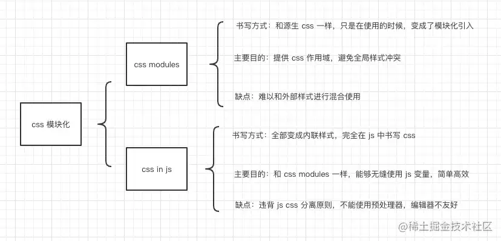

说说你对 CSS 模块化的理解
参考答案
CSS 发展
我们在书写 css 的时候其实经历了以下几个阶段：
- 手写原生 CSS
- 使用预处理器 Sass/Less
- 使用后处理器 PostCSS
- 使用 css modules
- 使用 css in js
手写原生 CSS
在我们最初学习写页面的时候，大家都学过怎么去写 css，也就以下几种情况：
- 行内样式，即直接在 html 中的 style 属性里编写 css 代码。
- 内嵌样式，即在 html h 中的 style 标签内编写 class，提供给当前页面使用。
- 导入样式，即在内联样式中 通过 @import 方法，导入其他样式，提供给当前页面使用。
- 外部样式，即使用 html 中的 link 标签，加载样式，提供给当前页面使用。
我们在不断摸索中，逐渐形成了以编写内嵌样式和外部样式为主要的编写习惯。
读到这里大家肯定有所疑问，为什么不建议使用行内样式？
使用行内样式的缺点<br><br>* 样式不能复用。<br>* 样式权重太高，样式不好覆盖。<br>* 表现层与结构层没有分离。<br>* 不能进行缓存，影响加载效率。
然后我们继续剖析一下，为什么不建议使用导入样式？
经测试，在 css 中使用 @import 会有以下两种情况：
1、在 IE6-8 下，@import 声明指向的样式表并不会与页面其他资源并发加载，而是等页面所有资源加载完成后才开始下载。
2、如果在 link 标签中去 @import 其他 css，页面会等到所有资源加载完成后，才开始解析 link 标签中 @import 的 css。
使用导入样式的缺点<br><br>* 导入样式，只能放在 style 标签的第一行，放其他行则会无效。<br>* @import 声明的样式表不能充分利用浏览器并发请求资源的行为，其加载行为往往会延后触发或被其他资源加载挂起。<br>* 由于 @import 样式表的延后加载，可能会导致页面样式闪烁。
使用预处理器 Sass/Less
随着时间的不断发展，我们逐渐发现，编写源生的 css 其实并不友好，例如：源生的 css 不支持变量，不支持嵌套，不支持父选择器等等，这些种种问题，催生出了像 sass/less 这样的预处理器。
预处理器主要是强化了 css 的语法，弥补了上文说了这些问题，但本质上，打包出来的结果和源生的 css 都是一样的，只是对开发者友好，写起来更顺滑。
后处理器 PostCSS
随着前端工程化的不断发展，越来越多的工具被前端大佬们开发出来，愿景是把所有的重复性的工作都交给机器去做，在 css 领域就产生了 postcss。
postcss 可以称作为 css 界的 babel，它的实现原理是通过 ast 去分析我们的 css 代码，然后将分析的结果进行处理，从而衍生出了许多种处理 css 的使用场景。
常用的 postcss 使用场景有：
- 配合 stylelint 校验 css 语法
- 自动增加浏览器前缀 autoprefixer
- 编译 css next 的语法
CSS 模块化迅速发展
随着 react、vue 等基于模块化的框架的普及使用，我们编写源生 css 的机会也越来越少。我们常常将页面拆分成许多个小组件，然后像搭积木一样将多个小组件组成最终呈现的页面。
但是我们知道，css 是根据类名去匹配元素的，如果有两个组件使用了一个相同的类名，后者就会把前者的样式给覆盖掉，看来解决样式命名的冲突是个大问题。
为了解决这个问题，产生出了 CSS 模块化的概念。
CSS 模块化定义
- 你是否为 class 命名而感到苦恼？
- 你是否有怕跟别人使用同样 class 名而感到担忧？
- 你是否因层级结构不清晰而感到烦躁？
- 你是否因代码难以复用而感到不爽？
- 你是否因为 common.css 的庞大而感到恐惧？
你如果遇到如上问题，那么就很有必要使用 css 模块化。
CSS 模块化的实现方式
BEM 命名规范
BEM 的意思就是块（block）、元素（element）、修饰符（modifier）。是由 Yandex 团队提出的一种前端命名方法论。这种巧妙的命名方法让你的 css 类对其他开发者来说更加透明而且更有意义。
BEM 的命名规范如下：
/* 块即是通常所说的 Web 应用开发中的组件或模块。每个块在逻辑上和功能上都是相互独立的。 */
.block {
}
/* 元素是块中的组成部分。元素不能离开块来使用。BEM 不推荐在元素中嵌套其他元素。 */
.block__element {
}
/* 修饰符用来定义块或元素的外观和行为。同样的块在应用不同的修饰符之后，会有不同的外观 */
.block--modifier {
}复制代码通过 bem 的命名方式，可以让我们的 css 代码层次结构清晰，通过严格的命名也可以解决命名冲突的问题，但也不能完全避免，毕竟只是一个命名约束，不按规范写照样能运行。
CSS Modules
CSS Modules 指的是我们像 import js 一样去引入我们的 css 代码，代码中的每一个类名都是引入对象的一个属性，通过这种方式，即可在使用时明确指定所引用的 css 样式。
并且 CSS Modules 在打包的时候会自动将类名转换成 hash 值，完全杜绝 css 类名冲突的问题。
使用方式如下：
1、定义 css 文件。
.className {
color: green;
}
/* 编写全局样式 */
:global(.className) {
color: red;
}
/* 样式复用 */
.otherClassName {
composes: className;
color: yellow;
}
.otherClassName {
composes: className from "./style.css";
}2、在 js 模块中导入 css 文件。
import styles from "./style.css";
element.innerHTML = '<div class="' + styles.className + '">';3、配置 css-loader 打包。
CSS Modules 不能直接使用，而是需要进行打包，一般通过配置 css-loader 中的 modules 属性即可完成 css modules 的配置。
// webpack.config.js
module.exports = {
module: {
rules: [
{
test: /\.css$/,
use:{
loader: 'css-loader',
options: {
modules: {
// 自定义 hash 名称
localIdentName: '[path][name]__[local]--[hash:base64:5]',
}
}
}
]
}
};
4、最终打包出来的 css 类名就是由一长串 hash 值生成。
._2DHwuiHWMnKTOYG45T0x34 {
color: red;
}
._10B-buq6_BEOTOl9urIjf8 {
background-color: blue;
}CSS In JS
CSS in JS，意思就是使用 js 语言写 css，完全不需要些单独的 css 文件，所有的 css 代码全部放在组件内部，以实现 css 的模块化。
CSS in JS 其实是一种编写思想，目前已经有超过 40 多种方案的实现，最出名的是 styled-components。
使用方式如下：
import React from "react";
import styled from "styled-components";
// 创建一个带样式的 h1 标签
const Title = styled.h1`
font-size: 1.5em;
text-align: center;
color: palevioletred;
`;
// 创建一个带样式的 section 标签
const Wrapper = styled.section`
padding: 4em;
background: papayawhip;
`;
// 通过属性动态定义样式
const Button = styled.button`
background: ${props => (props.primary ? "palevioletred" : "white")};
color: ${props => (props.primary ? "white" : "palevioletred")};
font-size: 1em;
margin: 1em;
padding: 0.25em 1em;
border: 2px solid palevioletred;
border-radius: 3px;
`;
// 样式复用
const TomatoButton = styled(Button)`
color: tomato;
border-color: tomato;
`;
<Wrapper>
<Title>Hello World, this is my first styled component!</Title>
<Button primary>Primary</Button>
</Wrapper>;可以看到，我们直接在 js 中编写 css，案例中在定义源生 html 时就创建好了样式，在使用的时候就可以渲染出带样式的组件了。
除此之外，还有其他比较出名的库：
- emotion
- radium
- glamorous
总结
最后放一张总结好的图。

CSS 模块化是一种将 CSS 代码组织成更小、更易于管理的单元的方法。这样做可以提高代码的可维护性、可重用性和可扩展性。
核心概念
- 封装性：每个模块的样式仅在模块内部有效，不会影响其他模块。
- 可重用性：模块化的 CSS 可以轻松地在不同的项目和组件中重用。
- 可维护性：模块化的代码更易于理解和维护，有助于团队协作。
实现方式
- CSS 预处理器（如 SASS、LESS）：通过变量、混合、函数等提高 CSS 的抽象和复用。
- CSS-in-JS：在 JavaScript 中写 CSS，利用 JavaScript 的动态特性和模块系统。
- 命名规范：如 BEM（Block Element Modifier）、SMACSS、OOCSS 等，通过命名约定实现样式的局部作用域。
考察重点
- 理解：CSS 模块化的目的和好处。
- 应用：能够使用 CSS 预处理器、CSS-in-JS 或命名规范来实现 CSS 模块化。